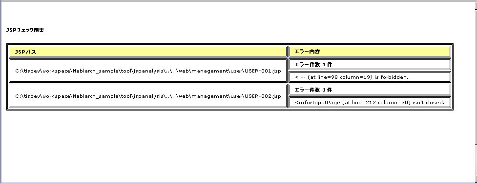

4.1.1. JSP Static Analysis Tool¶
Table of Contents
- Summary
- Specifications
- Prerequisites
- How to Use
- Confirmation of the existence of a configuration file
- Check the Ant task definition file
- Check the pom.xml of the target project that you want to check with the JSP static analysis tool
- How to write the JSP static analysis tool configuration file
- Fixing the pom.xml
- Execution
- How to check the output result
4.1.1.1. Summary¶
This tool specifies the syntax and tags that are allowed to be used in JSP, and checks in which only the allowed syntax and tags are used. This ensures the following:
- Improve maintainability by limiting the syntax and tags used.
- By limiting the syntax and tags that can be used, sanitizing leaks can be detected.
This tool is for checking files for which JSP compilation is successful. Therefore, if the file does not pass through JSP compilation (for example, the binding tag of taglib does not exist), this tool cannot correctly analyze the JSP file.
This tool is included in nablarch-testing-XXX.jar.
4.1.1.2. Specifications¶
4.1.1.2.1. How to specify which tags to allow¶
This tool points out where the syntax and tags that are not defined in the configuration file are used by defining the syntax and tags that are allowed to be used by the JSP . Check results are output in HTML or XML format.
The syntax and tags that can be specified with this tool are shown below.
- XML comments
- HTML comments [1]
- EL system
- Declaration
- Expression
- Scriptlet
- Directive
- Action tag
- Custom tag
This tool does not allow you to specify any other syntax and tags other than the above, such as HTML tags.
With this tool, the following locations are excluded from the check target. Always check locations other than those listed below.
- Attributes of tags that are allowed to be used
As an example, the check result when EL expressions are prohibited is shown below.
If an EL expression is specified as an attribute of an allowed tag, it is not pointed out.
<jsp:include page="${ Expression }" />If an EL expression is specified in the body of the allowed tag, it will be pointed out.
<jsp:text> ${ Expression } </jsp:text>If an EL expression is specified as an attribute of an HTML tag, it will be pointed out.
<td height="${ Expression }"> </td>If an EL expression is specified in the body of an HTML tag, it will be pointed out.
<td> ${ Expression } </td>If an EL expression is specified in JavaScript, point it out.
function samplefunc() { var id = ${user.id} }
Refer to How to write the JSP static analysis tool configuration file for the description method of the configuration file.
| [1] | Even if HTML comments are disabled, the following comments are not detected as errors.
These comments are required comments when switching CSS with a browser or using the business screen creation support tool, so it is inappropriate to detect them as errors. |
4.1.1.2.2. How to specify the files to be checked¶
The file (directory) of the check target is specified as the start argument to this tool. If a directory is specified, the target file (default is a file with the extension jsp, but the extension can be added by setting) is checked recursively.
In the development project of UI development infrastructure, there is a case that files to be checked (files deployed to the production environment) and files not to be checked (files for testing, etc. that are not deployed to the production environment) are mixed in the directory to be checked. In such a case, the check for unnecessary files can be disabled by using the exclusion file setting.
Refer to Rewriting pom.xml for how to set the files (directories) to be checked and the files (directories) not to be checked.
4.1.1.2.3. How to forcibly exclude part of the target file from being checked¶
In JSP and tag files created by the architect, there may be a need to use tags that are not allowed due to unavoidable circumstances. For example, a corresponding case is when the architect hides the tags in the tag file so that the tags are not used from the JSP file created by the developer.
In such a case, use the function that forcibly invalidates the check at a specific location. To disable the checking of a specific point, write the JSP comment to disable the checking on the line immediately above the corresponding line. Invalidation comments are tags that are not checked by this tool.Therefore, no error occurs even if you disable JSP comment.
Describe the JSP comment to be invalidated according to the following rules.
Write the start tag and end tag of a comment on the same line.
Comments must always start with suppress jsp check
Comments can be described after suppress jsp check. In the comment section, it is good to describe the reason for disabling the check
An example is shown below:
<%@tag import="java.util.regex.Pattern" %>
<%@tag import="java.util.regex.Matcher" %>
<%@taglib prefix="n" uri="http://tis.co.jp/nablarch" %>
<%-- suppress jsp check: Code needs to be checked in the server and embedded in the body class --%>
<%!
static class UserAgent {
}
%>
4.1.1.3. Prerequisites¶
- Generation of a blank project from the archetype must be complete.
4.1.1.4. How to Use¶
4.1.1.4.1. Confirmation of the existence of a configuration file¶
Confirm that the following files required to execute this tool exist in the static-analysis/jspanalysis directory of the tools project.
config.txt… JSP static analysis tool configuration filetransform-to-html.xsl… Definition file for converting JSP static analysis result XML to HTML
Refer to JSP Static Analysis Tool Configuration Change Guide for more information about these files.
4.1.1.4.2. Check the Ant task definition file¶
Confirm that the following definition exists in nablarch-tools.xml of tools project.
<project name="Nablarch Toolbox">
<!-- Middle is omitted -->
<target name="analyzeJsp" depends="analyzeJspOutputXml" description="Analyze JSP and output HTML report." >
<java classname="nablarch.test.tool.sanitizingcheck.HtmlConvert" dir="${nablarch.tools.dir}" fork="true">
<arg value="${jspanalysis.xmloutput}" />
<arg value="${jspanalysis.xsl}" />
<arg value="${jspanalysis.htmloutput}" />
<classpath>
<path refid="classpath.common" />
</classpath>
</java>
</target>
<target name="analyzeJspOutputXml" description="Analyze JSP and output XMLreport." >
<java classname="nablarch.test.tool.sanitizingcheck.SanitizingCheckTask" dir="${nablarch.tools.dir}" fork="true">
<arg value="${jspanalysis.checkjspdir}" />
<arg value="${jspanalysis.xmloutput}" />
<arg value="${jspanalysis.checkconfig}" />
<arg value="${jspanalysis.charset}" />
<arg value="${jspanalysis.lineseparator}" />
<arg value="${jspanalysis.additionalexts}" />
<!-- "Configure the directory (file) name not to be checked as a regular expression" for JSP static analysis tool.
When this value is enabled in pom.xml of parent project, comment out is canceled.
<arg value="${jspanalysis.excludePatterns}" />
-->
<classpath>
<path refid="classpath.common" />
</classpath>
</java>
</target>
<!-- Middle is omitted -->
</project>
4.1.1.4.3. Check the pom.xml of the target project that you want to check with the JSP static analysis tool¶
Confirm that the following description exists in pom.xml of the target project that you want to check with JSP static analysis tool.
<properties>
<!-- Middle is omitted -->
<!-- "Configure the directory (file) name not to be checked as a regular expression" for JSP static analysis tool.
To enable this configuration, uncomment the configuration in nablarch-tools.xml of the tools project.
<jspanalysis.excludePatterns></jspanalysis.excludePatterns>
-->
<!-- Middle is omitted -->
</properties>
<!-- Middle is omitted -->
<build>
<!-- Middle is omitted -->
<plugins>
<!-- Middle is omitted -->
<plugin>
<groupId>org.apache.maven.plugins</groupId>
<artifactId>maven-antrun-plugin</artifactId>
</plugin>
<!-- Middle is omitted -->
</plugins>
</build>
Tip
The configuration values of the JSP static analysis tool are described in pom.xml of nablarch-archetype-parent.
<properties>
<!-- Middle is omitted -->
<!-- Configuration items of JSP static analysis tool -->
<jspanalysis.checkjspdir>${project.basedir}/src/main/webapp</jspanalysis.checkjspdir>
<jspanalysis.xmloutput>${project.basedir}/target/jspanalysis-result.xml</jspanalysis.xmloutput>
<jspanalysis.checkconfig>${nablarch.tools.dir}/static-analysis/jspanalysis/config.txt</jspanalysis.checkconfig>
<jspanalysis.charset>UTF-8</jspanalysis.charset>
<jspanalysis.lineseparator>\n</jspanalysis.lineseparator>
<jspanalysis.htmloutput>${project.basedir}/target/jspanalysis-result.html</jspanalysis.htmloutput>
<jspanalysis.xsl>${nablarch.tools.dir}/static-analysis/jspanalysis/transform-to-html.xsl</jspanalysis.xsl>
<jspanalysis.additionalexts>tag</jspanalysis.additionalexts>
</properties>
Refer to JSP Static Analysis Tool Configuration Change Guide for details of each configuration item.
4.1.1.4.4. How to write the JSP static analysis tool configuration file¶
Modify the configuration file to reflect the project’s conventions.
Important
Don’t change the settings to suit the application programmer’s convenience during development.
In the configuration file, list the syntax and tags that are allowed to be used according to the table below. A line beginning with “–” is a comment line.
| Syntax or tag | Usage example in JSP | How to describe in the configuration file |
|---|---|---|
| XML comments | <%– comment –%> | <%– |
| HTML comments | <!– comment –> | <!– |
| EL system | ${10 mod 4} | ${ |
| Declaration | <%! int i = 0; %> | <%! |
| Expression | <%= map.size() %> | <%= |
| Scriptlet | <% String name = null; %> | <% |
| Directive | <%@ taglib prefix=”n” uri= “http://tis.co.jp/nablarch” %> |
Describe the part starting from “<%@” and ending Example: <%@ taglib |
| Action tag | <jsp:attribute name=”attrName” /> | It should start with “<jsp:” and end Example: <jsp:attribute |
| Custom tag | <n:error name=”attrName” /> | The configuration method is the same as the action tag. |
The default configuration are as follows.
<n:
<c:
<%--
<%@ include
<%@ page
<%@ tag
<%@ taglib
<jsp:include
<jsp:directive.include
<jsp:directive.page
<jsp:directive.tag
<jsp:param
<jsp:params
<jsp:attribute
The syntax and tags excluded by default configuration are as follows.
These are the syntax and tags that have similar functionality to Nablarch custom tags or could be security holes.
<!--
<%!
${
<%
<%@ attribute
<%@ variable
<jsp:declaration
<jsp:expression
<jsp:scriptlet
<jsp:directive.attribute
<jsp:directive.variable
<jsp:body
<jsp:element
<jsp:doBody
<jsp:forward
<jsp:getProperty
<jsp:invoke
<jsp:output
<jsp:plugin
<jsp:fallback
<jsp:root
<jsp:setProperty
<jsp:text
<jsp:useBean
4.1.1.4.5. Fixing the pom.xml¶
Modify the properties described in pom.xml according to the execution environment.
For more information, see Rewriting pom.xml.
4.1.1.4.6. Execution¶
Make the current directory a target directory for analysis and execute the verify phase.
An example is shown below.
cd XXX-web
mvn verify -DskipTests=true
4.1.1.4.7. How to check the output result¶
JSP analysis (HTML report output)
Check the JSP and output the result to HTML.
In the default configuration, it is output to target/jspanalysis-result.html.
The output destination can be changed by setting the jspanalysis.htmloutput property of pom.xml.
An example of the output contents are shown below.
In the above example, there are two ways to deal with the points made, and the way to deal with each point is as follows.
If an unauthorized tag is used.
The error message [“Syntax or tag name” + “indicated position” is forbidden.] is displayed. Use the syntax and tags allowed by the project terms and conditions to address this.
JSP analysis (XML report output)
Check the JSP and output the check result to XML.
Specify the output destination of XML in jspanalysis.xmloutput property of pom.xml.
By formatting the output XML with XSLT etc., you can create any report.
The output XML format is as follows.
Element name Description result Root node item Node created for each JSP path Node that represents the path of the corresponding JSP. errors Node that indicates an issue for the corresponding JSP. error Content of individual points <?xml version="1.0" encoding="UTF-8" standalone="no"?> <result> <item> <path>C:\tisdev\workspace\Nablarch_sample\web\management\user\USER-001.jsp</path> <errors> <error><!-- (at line=17 column=6) is forbidden.</error> <error><c:if (at line=121 column=2) is forbidden.</error> <error><!-- (at line=150 column=8) is forbidden.</error> <error><!-- (at line=151 column=8) is forbidden.</error> <error><!-- (at line=160 column=8) is forbidden.</error> </errors> </item> <item> <path>C:\tisdev\workspace\Nablarch_sample\web\management\user\USER-002.jsp</path> <errors> <error><!-- (at line=20 column=10) is forbidden.</error> <error><c:if (at line=152 column=46) is forbidden.</error> </errors> </item> <item> <path>C:\tisdev\workspace\Nablarch_sample\web\management\user\USER-004.jsp</path> <errors> <error><!-- (at line=16 column=10) is forbidden.</error> </errors> </item> </result>
{kind=link}
Tip
This tool should be executed regularly by a CI server such as Jenkins, not by leaving it to the application developer, and always ensure that unauthorized tags are not used.